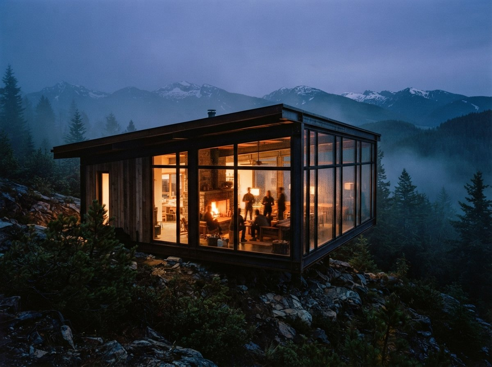

The tool lists frame this as a checkbox. Native integration: yes or no. A green tick on one row, a blank cell on another, and the reader is left to assume it ranks somewhere near "has a dark mode." The framing is wrong, and it is worth pulling apart, because the difference between a render that runs inside your CAD model and one that runs in a browser tab is not how many windows you have open. It is how much your building tells the model about itself before a single pixel is drawn.
Start from what the AI actually receives in each case, because everything else follows from that.
What native integration actually moves
A plugin that runs inside Revit, SketchUp or Rhino is sitting on top of a real scene. It does not just see a picture of your building. It can read the model: where the surfaces are in space, which planes face the camera, how far each one sits from the lens. So when it asks the diffusion model for a render, it can hand over more than a colour image. It can pass a depth pass, an edge pass, a structure signal generated from the geometry itself.
That signal is the whole argument. A render model that receives a clean depth map knows where the wall ends and the sky begins, where the recess is, where the parapet sits. It paints into that frame instead of guessing at it. The geometry is pinned before the styling starts, so the building it gives back is the building you modelled, not a confident lookalike with a bay added for composition.
The depth signal you never had to make
You can produce a depth map by hand for a flat image, of course. That is exactly what a careful ComfyUI operator does, generating a depth or lineart control from the source and feeding it back in to hold the structure. The integrated plugin does that step for you, from real geometry rather than an estimate, and it does it every time without being asked. What is a manual discipline in the browser is the default behaviour inside the model. For geometry-critical work, that default is the entire value proposition, and the tool lists reduce it to a tick.
The round-trip you stop managing
The second thing integration removes is the round-trip itself. Export the view, name the file, open the web app, upload, wait, download, drop it back into the layout. Do that once and it is nothing. Do it forty times across a week of revisions and it becomes the job. Worse, each lap is a fresh upload with no thread connecting it to the last one, so the tool has no idea it rendered a near-identical frame an hour ago. Inside the model, the geometry is simply there, and a new render is a new button, not a new errand.

What the round-trip costs, and when it doesn't
So far this reads like a closed case for the plugin. It is not, and the honest version of the argument has to say where the browser tab actually wins, because for a lot of work it does.
The export round-trip has one large virtue: it commits you to nothing. You keep your model in your CAD tool and you treat the render as a service you visit, not a system you marry. No plugin to license per seat, no credit pool tied to one vendor, no roadmap you have to track. For a practice that needs an AI render now and then, a concept image for a pitch, a quick mood study to put in front of a client, that freedom is worth more than the fidelity it gives up. A single hero image does not need cross-view consistency, and a flat PNG passed to a strong model will produce something perfectly publishable.
The round-trip starts to hurt on two specific axes. The first is iteration: when you are turning the same view ten times, the export-upload-download lap is pure overhead and it adds up fast. The second is consistency across a set. Holding one building stable across six views, the same facade, the same materials, the same proportions, is hard enough with structure control feeding in from geometry. With nothing but a series of unrelated PNG uploads, each generated fresh, it is close to a fight. The model never sees the building twice, so it never learns it.
| Dimension | Native plugin (in-model) | PNG round-trip (browser) |
|---|---|---|
| Structure fidelity | High, depth read from real geometry | Depends on a manual depth or line control |
| Iteration speed | Fast, render is one button | Export, upload, download every lap |
| Set consistency | Strong, geometry feeds every view | Weak, each upload is unrelated |
| One-off concept image | Fine, but overkill | Fast, no setup, nothing to install |
| Vendor lock-in | Real, tied to one roadmap and credit pool | None, the model stays yours |
| Cost shape | Per-seat licence plus credits | Pay per use, easy to walk away from |
The decision is about your work, not the tool
Notice that the comparison never settled on a winning product, and it should not, because the right answer flips depending on what you make. The useful question is not "which renderer is best." It is "how geometry-critical and how repetitive is my render work," and the two integration models sort almost cleanly along that axis.
If your renders go to planners, to committees, to anyone who will check a render against a drawing, the structure has to hold, and the depth signal that comes free with integration is doing real protective work. If you are producing sets, multiple views of the same scheme that have to read as one building, integration is close to mandatory because it is the only practical way to feed the geometry into every frame. In both cases the lock-in is a price worth paying, because the plugin pays it back every week in renders that do not need policing.
If your AI render work is occasional and standalone, a concept image here, a quick visual to unstick a conversation there, the round-trip is the smarter posture. You stay vendor-neutral, you spend nothing between projects, and you give up a fidelity advantage you were not going to use. Installing a per-seat plugin to make four images a quarter is paying a subscription to solve a problem you do not have.
Integration is not a convenience the tool lists keep filing under "nice to have." It is the difference between a model that sees your building and one that imagines it.
So the next time a comparison hands the top row to native integration, read past the checkbox. Ask what the model receives, and ask how often you render the same geometry. If the answer is real depth and constant repetition, the plugin is fidelity wearing the costume of convenience, and it is worth the lock-in. If the answer is occasional one-off images, the browser tab is not a downgrade, it is the right amount of tool. The wrong move is the one the marketing nudges you toward by default: buying the integration because the chart rewarded it, then exporting PNGs anyway.
Drawn from this week's intel sweep of 2026 architectural visualization coverage, where comparison pieces kept leading with one renderer's claim of native integration into seven BIM and CAD platforms. ArchiGen AI runs no sponsored placements and has no affiliate relationship with any tool named here.